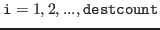

Next: Fortran 77 interface to Up: Function reference Previous: Function implemented on MPI
The following function is declared in module cp_mpi.
Like MPI functions, each process must call mpi_init or mpi_init_thread before calling the following function. Each process must call mpi_finalize before exiting.
<arbitrary type> sendbuf(*)
integer(8) sendsizes(*)
integer dests(destcount)
integer destcount
<arbitrary type> recvbuf(*)
integer(8) recvsizemax
mpi_comm comm
cp_mpi_export sends sendsizes(i) ( ) bytes from array sendbuf to the process of rank dests(i) in the communicator comm. The first sendsizes(1) bytes of the array are sent to dests(1), the following sendsizes(2) bytes are sent to the process of rank dests(2), ..., the last sendsizes(destcount) bytes are sent to the process of rank dests(destcount). dests(1), dests(2), ..., and dests(destcount) must be all different. dests(i) may be the same as the rank of the process calling cp_mpi_export.
cp_mpi_export also receives data which have been sent by cp_mpi_export from other processes to array recvbuf. Data which the first source process has sent are received into the head of the array, followed by data which the second source process has sent, followed by data which the third source process has sent and so on. The order of source processes is undefined. recvbuf must not be overlapped with sendbuf.
If data to receive is greater than recvsizemax bytes in total, cp_mpi_export fails. Once cp_mpi_export fails, behaviors of following cp_mpi_export and MPI function calls become undefined. recvsizemax must be the same in all processes.
cp_mpi_export returns the total size of receive data on success. The size is returned in bytes. cp_mpi_export returns a negative integer on failure.
All processes included in comm must call cp_mpi_export.